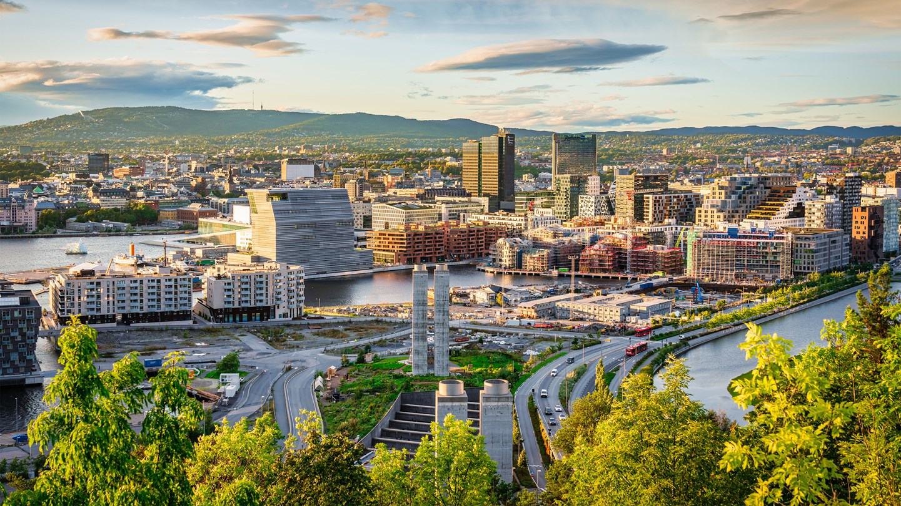
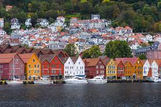
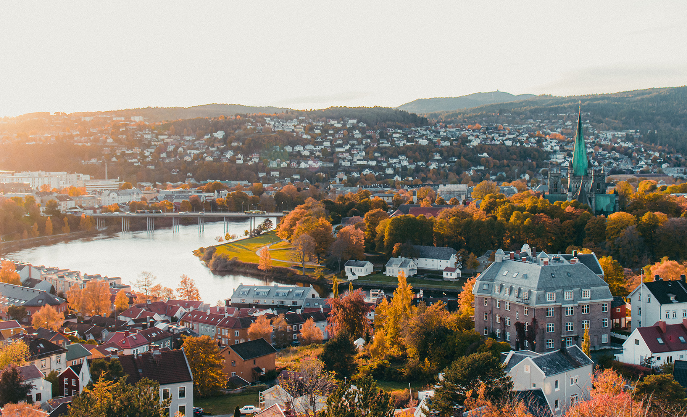
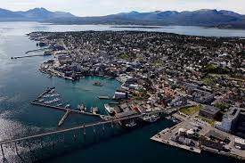

Oversikt over utleiesteder
Finn utleieplassen nermest deg!
Vi har utleiesteder i 4 byer
Byene
- Oslo
-
Oslo er norges hovedstad og byr på masse ulike plasser.
Her har du mulighet til å se Akershus festning, shoppe og besøke slottet om ønskelig.
Dette er en av norges største byer og du har alle muligheter du kan ønske deg.
- Bergen
-
I Bergen finner du over 60 ulike attraksjoner, museer og gallerier.
Her kan du besøke både Bryggen i Bergen, Akvariet, Fløibanen og Fisketorget.
Bryggen i Bergen en av Bergens største attraksjoner. Bryggen er bygget etter storbrannen i 1702 og står på Unescos Verdensarvliste.
- Trondheim
-
Trondheim har mye å by på, fra urbant uteliv, til storslått natur, en rik historie og noen av Norges flotteste severdigheter.
Nidarosdomen er Trondheim mest populære turistattraksjon.
Trondheims «gamleby», Bakklandet, er den mest pittoreske delen av byen,
med sine brosteinsbelagte gater og klynger av fargerik trehusbebyggelse.
Her finner du koselige kafeer, kule restauranter og designerbutikker.
- Tromsø
-
Tromsø er omgitt av fin natur og fjell. Det nærmeste, og kanskje også den mest populære turen, går til Fjellheisen.
Du kan besøke verdens nordligste Botaniske hage som også er kåret til en av verdens 10 vakreste hager.
Kanskje en av de mest kjente tingene man kan gjøre her er nok nordlysjakt.



